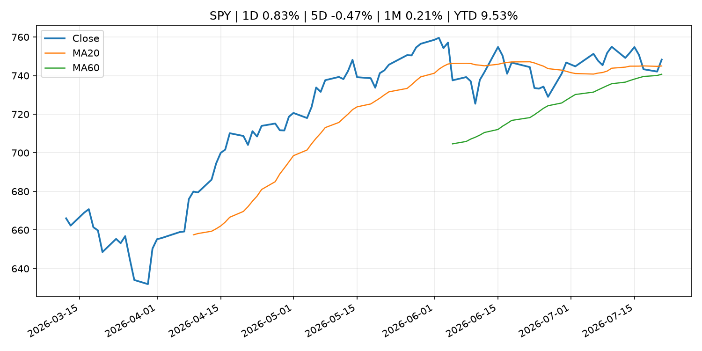
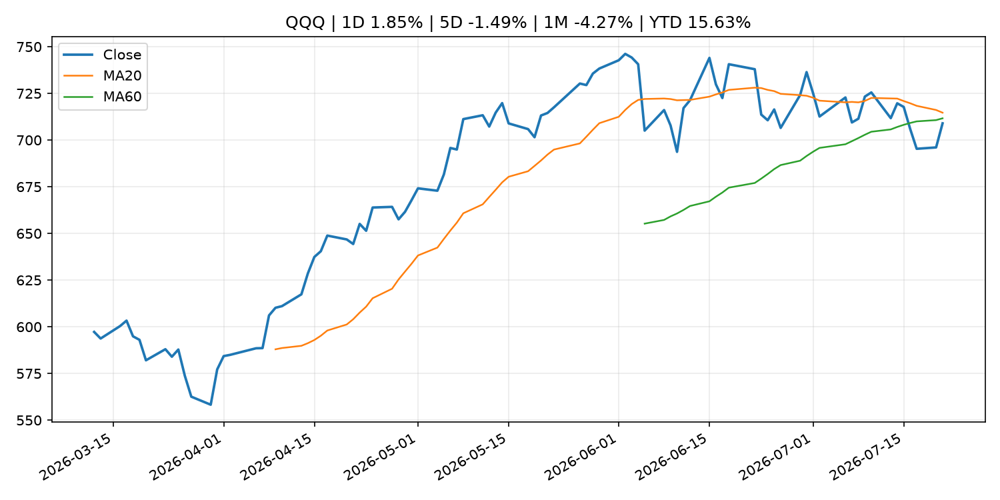
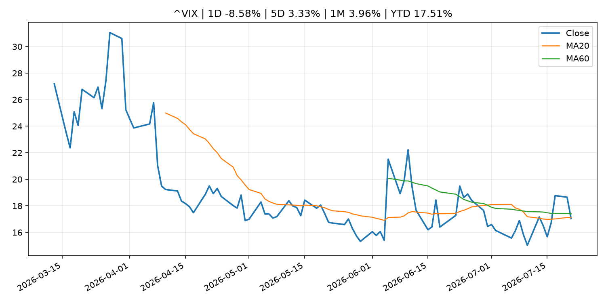
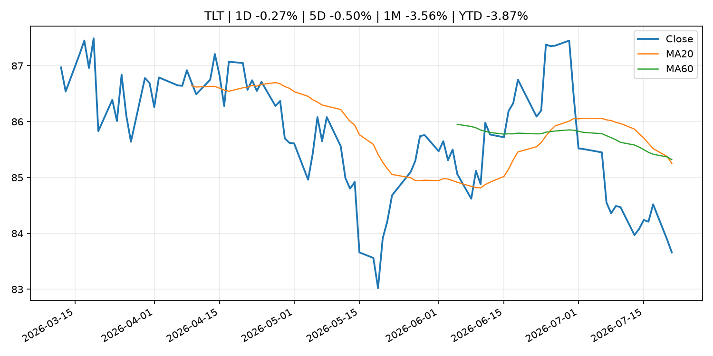
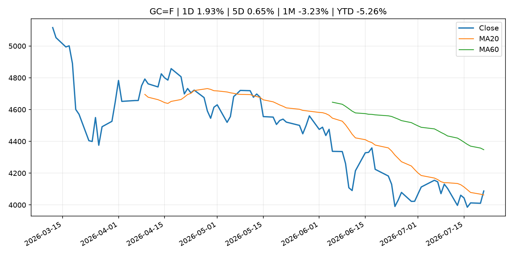
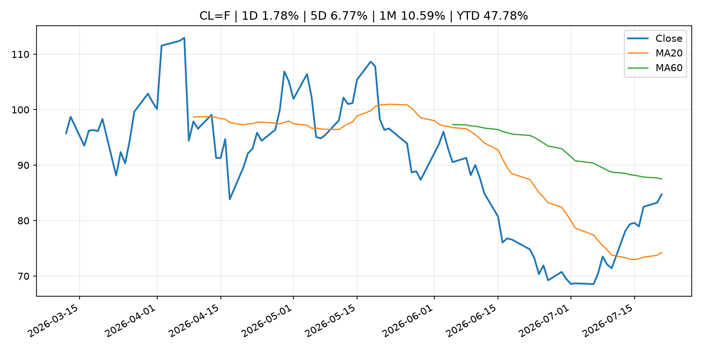
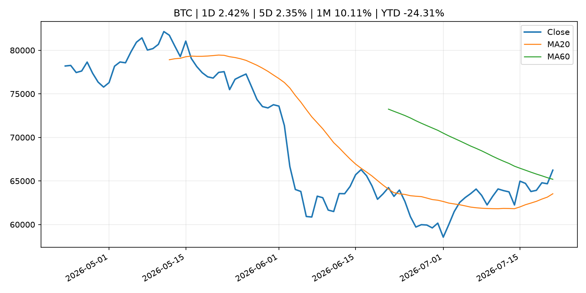
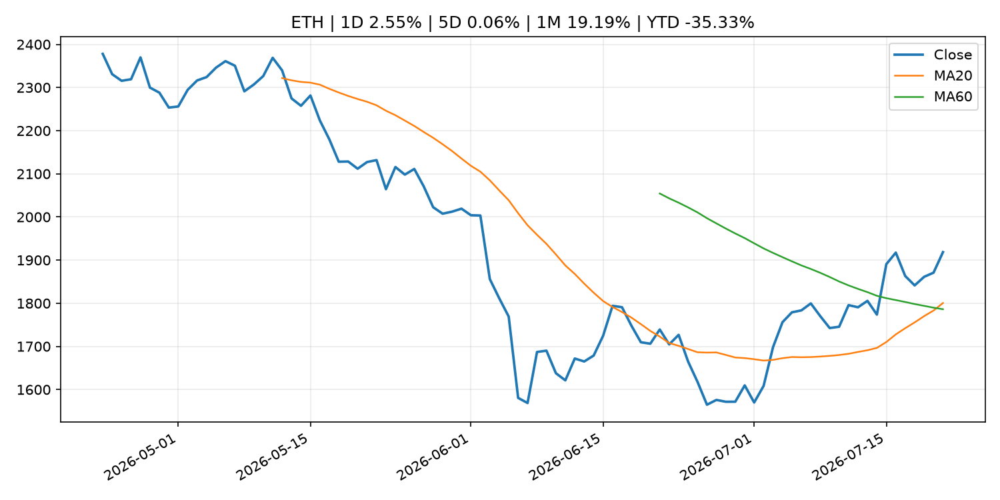
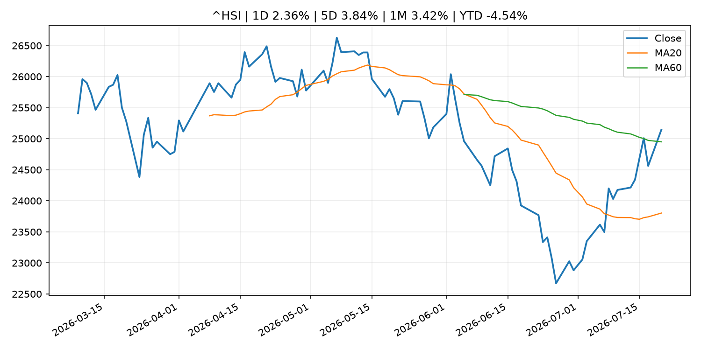

Global Macro Morning Briefing - 2026-07-22
Not financial advice / 非投资建议。
0. 今日总览
- 市场状态：risk_on。股指上涨、波动率或美元回落，市场更接近风险偏好改善。
- 今日三大主线：
- geopolitical_risk: Why energy stocks still look so cheap, even after their big rally this month
- crypto_market_structure: Augustus raises $180 million to build a clearing bank for the AI and stablecoin era
- earnings: Capital One bet big on Discover. Now it must prove the gamble was worth it
- 一句话结论：今日晨报重点关注：地缘风险可能推升避险需求、能源价格和市场波动率。；加密市场结构和监管变化会影响 BTC、ETH 及相关股票的风险溢价。。跨资产方面，SPY 1D 0.83%；QQQ 1D 1.85%；^VIX 1D -8.58%；TLT 1D -0.27%；GC=F 1D 1.93%；CL=F 1D 1.78%；BTC 1D 2.42%；ETH 1D 2.55%；股指上涨、波动率或美元回落，市场更接近风险偏好改善。政策、通胀、利率、美元、美债、能源和加密监管仍是主要观察线索。所有结论仅基于公开数据与短摘要整理，不构成投资建议。
1. 隔夜跨资产市场
- 美股：SPY 1D 0.83%，QQQ 1D 1.85%，整体趋势需结合 VIX 和利率确认。
- 美债/美元：TLT 1D -0.27%，美元指数 1D 0.20%，是判断折现率压力的核心线索。
- 黄金/原油：黄金 1D 1.93%，原油 1D 1.78%，用于观察避险、通胀和地缘风险。
- 加密：BTC 1D 2.42%，ETH 1D 2.55%，关注是否独立于纳指走出加密自身行情。
- 港股/A股：恒生 1D 2.36%，沪深300/上证 1D n/a，重点看中国政策预期与人民币线索。
- 风险观察：确认风险偏好是否扩散到小盘股、信用利差和周期品。
US_EQUITY
| symbol | latest close | 1D | 5D | 1M | YTD | trend |
|---|---|---|---|---|---|---|
| SPY | 748.28 | 0.83% | -0.47% | 0.21% | 9.53% | uptrend |
| QQQ | 708.97 | 1.85% | -1.49% | -4.27% | 15.63% | range_bound |
| DIA | 521.51 | 0.69% | -0.61% | 1.16% | 7.83% | range_bound |
| IWM | 296.54 | 1.45% | 0.69% | 0.32% | 19.20% | range_bound |
| VTI | 369.45 | 0.87% | -0.46% | -0.15% | 9.85% | uptrend |
US_MACRO_MARKET
| symbol | latest close | 1D | 5D | 1M | YTD | trend |
|---|---|---|---|---|---|---|
| ^VIX | 17.05 | -8.58% | 3.33% | 3.96% | 17.51% | downtrend |
| DX-Y.NYB | 101.19 | 0.20% | 0.25% | 0.34% | 2.82% | uptrend |
| TLT | 83.66 | -0.27% | -0.50% | -3.56% | -3.87% | strong_downtrend |
| IEF | 93.31 | -0.25% | -0.26% | -1.11% | -2.88% | downtrend |
COMMODITIES
| symbol | latest close | 1D | 5D | 1M | YTD | trend |
|---|---|---|---|---|---|---|
| GC=F | 4,087.60 | 1.93% | 0.65% | -3.23% | -5.26% | range_bound |
| SI=F | 59.17 | 4.16% | 0.67% | -10.70% | -16.14% | range_bound |
| CL=F | 84.71 | 1.78% | 6.77% | 10.59% | 47.78% | range_bound |
| BZ=F | 91.64 | 2.71% | 8.16% | 14.77% | 50.85% | range_bound |
| NG=F | 2.88 | 0.87% | -0.65% | -10.76% | -20.26% | range_bound |
| HG=F | 6.53 | 3.68% | 3.18% | 2.46% | 15.80% | range_bound |
HK_MARKET
| symbol | latest close | 1D | 5D | 1M | YTD | trend |
|---|---|---|---|---|---|---|
| ^HSI | 25,143.05 | 2.36% | 3.84% | 3.42% | -4.54% | range_bound |
| 0700.HK | 474.00 | -0.80% | 3.90% | 7.68% | -23.92% | range_bound |
| 9988.HK | 117.00 | 0.17% | 5.60% | 11.53% | -21.48% | range_bound |
| 3690.HK | 85.20 | -1.27% | 7.58% | 18.66% | -18.55% | range_bound |
| 1810.HK | 27.42 | -1.15% | 5.30% | 11.55% | -31.93% | range_bound |
| 1211.HK | 89.80 | -0.39% | 4.24% | 11.07% | -9.06% | range_bound |
CRYPTO
| symbol | latest close | 1D | 5D | 1M | YTD | trend |
|---|---|---|---|---|---|---|
| BTC | 66,244.43 | 2.42% | 2.35% | 10.11% | -24.31% | range_bound |
| ETH | 1,918.52 | 2.55% | 0.06% | 19.19% | -35.33% | strong_uptrend |
| SOLANA | 77.86 | 2.03% | 0.79% | 3.84% | -37.47% | range_bound |
| BINANCECOIN | 572.22 | 0.29% | -1.34% | 2.42% | -33.71% | downtrend |
| RIPPLE | 1.14 | 4.14% | 2.55% | 7.87% | -37.98% | range_bound |
2. 今日最重要的 10 条新闻
1. Why energy stocks still look so cheap, even after their big rally this month
- 来源：MarketWatch Top Stories
- 时间：2026-07-21T20:27:00+00:00
- 地区：US
- 事件类型：geopolitical_risk
- 重要性层级：Tier 1
- 一句话摘要：Energy stocks are having a big month as oil prices surge on Iran war fears — but it’s not solely the conflict in the Middle East that makes the sector appear attractive.
- 为什么重要：地缘风险可能推升避险需求、能源价格和市场波动率。
- 可能影响：主要影响 CL=F，方向为 positive，强度 high；供给扰动或 OPEC 减产通常推升 WTI 原油。
- 资产：CL=F 方向：positive 强度：high 原因：供给扰动或 OPEC 减产通常推升 WTI 原油。
- 资产：BZ=F 方向：positive 强度：high 原因：全球供给风险通常直接影响 Brent 原油。
- 资产：SPY 方向：mixed 强度：medium 原因：能源股可能受益，但通胀和成本压力不利于宽基风险资产。
- 原文链接：https://www.marketwatch.com/story/why-energy-stocks-still-look-so-cheap-even-after-their-big-rally-this-month-7f1a298b?mod=mw_rss_topstories
2. Augustus raises $180 million to build a clearing bank for the AI and stablecoin era
- 来源：CoinDesk
- 时间：2026-07-21T14:27:03+00:00
- 地区：global
- 事件类型：crypto_market_structure
- 重要性层级：Tier 2
- 一句话摘要：Augustus raises $180 million to build a clearing bank for the AI and stablecoin era
- 为什么重要：加密市场结构和监管变化会影响 BTC、ETH 及相关股票的风险溢价。
- 可能影响：主要影响 BTC，方向为 mixed，强度 high；加密监管或 ETF 进展会改变 BTC 的资金流和风险溢价。
- 资产：BTC 方向：mixed 强度：high 原因：加密监管或 ETF 进展会改变 BTC 的资金流和风险溢价。
- 资产：ETH 方向：mixed 强度：high 原因：监管框架会影响 ETH 产品化和机构参与度。
- 资产：COIN 方向：mixed 强度：medium 原因：监管清晰度和执法风险会影响交易平台估值。
- 资产：crypto market 方向：mixed 强度：high 原因：信息影响整个加密市场结构，但方向取决于细节。
- 原文链接：https://www.coindesk.com/business/2026/07/21/augustus-raises-usd180-million-to-build-a-clearing-bank-for-the-ai-and-stablecoin-era
3. Capital One bet big on Discover. Now it must prove the gamble was worth it
- 来源：CNBC Economy
- 时间：2026-07-20T18:14:23+00:00
- 地区：US
- 事件类型：earnings
- 重要性层级：Tier 2
- 一句话摘要：Tuesday evening's second-quarter earnings report is the perfect stage to do just that.
- 为什么重要：大型科技股盈利和资本开支会影响纳指、半导体和 AI 交易主线。
- 可能影响：可能影响利率、汇率、风险资产或大宗商品预期，但当前公开信息不足以判断明确方向。
- 资产：暂无明确资产映射
- 方向：unknown
- 强度：low
- 原因：公开信息不足以判断方向。
- 原文链接：https://www.cnbc.com/2026/07/20/capital-one-bet-big-on-discover-now-it-must-prove-the-gamble-was-worth-it-.html
4. Coinbase trading results may fall short of expectations, according to prediction markets
- 来源：CNBC Economy
- 时间：2026-07-20T12:41:50+00:00
- 地区：US
- 事件类型：earnings
- 重要性层级：Tier 2
- 一句话摘要：Speculators think in the company's second quarter earnings report, it will show trading volume fell for a third consecutive quarter.
- 为什么重要：大型科技股盈利和资本开支会影响纳指、半导体和 AI 交易主线。
- 可能影响：可能影响利率、汇率、风险资产或大宗商品预期，但当前公开信息不足以判断明确方向。
- 资产：暂无明确资产映射
- 方向：unknown
- 强度：low
- 原因：公开信息不足以判断方向。
- 原文链接：https://www.cnbc.com/2026/07/20/kalshi-traders-think-coinbases-trading-volume-will-fall-again.html
5. Goldman Sachs creates private markets platform as rich investors seek the next SpaceX and Stripe
- 来源：CNBC Economy
- 时间：2026-07-21T20:51:34+00:00
- 地区：US
- 事件类型：other
- 重要性层级：Tier 3
- 一句话摘要：Goldman Sachs is launching a new alternative investments platform aimed at giving wealthy clients and family offices direct stakes in private companies.
- 为什么重要：这条信息暂未匹配到重大宏观、政策或市场事件，更适合作为背景跟踪。
- 可能影响：更偏背景信息，短期市场影响可能有限。
- 资产：暂无明确资产映射
- 方向：unknown
- 强度：low
- 原因：公开信息不足以判断方向。
- 原文链接：https://www.cnbc.com/2026/07/21/goldman-sachs-private-markets-platform.html
6. ECB appoints Boris Kisselevsky as Director General Secretariat
- 来源：ECB Press Releases
- 时间：2026-07-21T16:00:00+02:00
- 地区：EU
- 事件类型：other
- 重要性层级：Tier 3
- 一句话摘要：ECB appoints Boris Kisselevsky as Director General Secretariat
- 为什么重要：这条信息暂未匹配到重大宏观、政策或市场事件，更适合作为背景跟踪。
- 可能影响：更偏背景信息，短期市场影响可能有限。
- 资产：暂无明确资产映射
- 方向：unknown
- 强度：low
- 原因：公开信息不足以判断方向。
- 原文链接：https://www.ecb.europa.eu//press/pr/date/2026/html/ecb.pr260721_1~8c6ba4c5fb.en.html
3. 政策与央行观察
1. Augustus raises $180 million to build a clearing bank for the AI and stablecoin era
- 来源：CoinDesk
- 时间：2026-07-21T14:27:03+00:00
- 地区：global
- 事件类型：crypto_market_structure
- 重要性层级：Tier 2
- 一句话摘要：Augustus raises $180 million to build a clearing bank for the AI and stablecoin era
- 为什么重要：加密市场结构和监管变化会影响 BTC、ETH 及相关股票的风险溢价。
- 可能影响：主要影响 BTC，方向为 mixed，强度 high；加密监管或 ETF 进展会改变 BTC 的资金流和风险溢价。
- 资产：BTC 方向：mixed 强度：high 原因：加密监管或 ETF 进展会改变 BTC 的资金流和风险溢价。
- 资产：ETH 方向：mixed 强度：high 原因：监管框架会影响 ETH 产品化和机构参与度。
- 资产：COIN 方向：mixed 强度：medium 原因：监管清晰度和执法风险会影响交易平台估值。
- 资产：crypto market 方向：mixed 强度：high 原因：信息影响整个加密市场结构，但方向取决于细节。
- 原文链接：https://www.coindesk.com/business/2026/07/21/augustus-raises-usd180-million-to-build-a-clearing-bank-for-the-ai-and-stablecoin-era
4. 市场异动与图表
- SPY 上涨 0.83%
- QQQ 上涨 1.85%
- VIX 下跌 -8.58%
- Gold 上涨 1.93%
- Oil 上涨 1.78%
- BTC 上涨 2.42%
- ETH 上涨 2.55%
SPY

QQQ

^VIX

TLT

GC=F

CL=F

BTC

ETH

^HSI

5. 华尔街与机构公开观点
- 暂无可靠公开观点。
6. 今日重点关注
- 经济数据：经济数据：暂无可靠公开日历数据；如配置经济日历源后可自动填充。
- 央行讲话：央行讲话：暂无可靠公开日历数据；重点跟踪 Fed、ECB、BoJ、PBOC 官网 RSS。
- 财报：财报：暂无可靠数据。
- 政策事件：政策事件：暂无可靠数据。
- 风险提醒：风险提醒：关注数据源失败项、突发地缘风险、利率和美元的二阶反应。
7. 英文金融表达与宏观概念
- real yield：实际收益率，名义利率扣除通胀预期后的收益率。 例句：Gold often reacts more to real yields than nominal yields.
- risk-off：避险模式，资金偏向美元、国债、黄金等防御资产。 例句：A geopolitical shock can push markets into risk-off mode.
- supply disruption：供给扰动，通常指能源或商品供应受冲突、减产或天气影响。 例句：Supply disruption can lift oil prices and inflation expectations.
- market structure：市场结构，指交易、托管、清算、ETF、监管等制度安排。 例句：Crypto market structure rules can affect institutional participation.
- inflation expectations：通胀预期，指家庭、企业或市场对未来通胀的预估。 例句：Inflation expectations can shape wage bargaining and bond yields.
- terminal rate：终端利率，市场预期本轮加息周期的最高政策利率。 例句：A higher terminal rate can pressure growth stocks.
8. 背景材料
- Crypto Clarity Act still at mercy of ethics section as Democrats balk at Trump deal（CoinDesk，other）：Crypto Clarity Act still at mercy of ethics section as Democrats balk at Trump deal
- Goldman Sachs creates private markets platform as rich investors seek the next SpaceX and Stripe（CNBC Economy，other）：Goldman Sachs is launching a new alternative investments platform aimed at giving wealthy clients and family offices direct stakes in private companies.
- I will definitely claim Social Security early. Why do so few people talk about the elephant in the room?（MarketWatch Top Stories，other）：“The strongest argument for claiming benefits earlier goes beyond the traditional break-even analyses.”
- Bitcoin rally faces key test at $68,000 as 'summer slumber' grips crypto, analysts say（CoinDesk，other）：Bitcoin rally faces key test at $68,000 as 'summer slumber' grips crypto, analysts say
- Claude's Fable 5 just solved an 87-year-old math problem, and it matters for bitcoin（CoinDesk，other）：Claude's Fable 5 just solved an 87-year-old math problem, and it matters for bitcoin
- Galaxy sets up $5 million fund to help shield Bitcoin against quantum computing threats（CoinDesk，other）：Galaxy sets up $5 million fund to help shield Bitcoin against quantum computing threats
- ECB appoints Boris Kisselevsky as Director General Secretariat（ECB Press Releases，other）：ECB appoints Boris Kisselevsky as Director General Secretariat
- Jack Mallers steps down as XXI Capital CEO as Tether's plans to merge three bitcoin firms falls（CoinDesk，other）：Jack Mallers steps down as XXI Capital CEO as Tether's plans to merge three bitcoin firms falls
- Bitcoin rally has broad-based support as institutions, whales, options traders pile in（CoinDesk，other）：Bitcoin rally has broad-based support as institutions, whales, options traders pile in
- Jamie Dimon says markets underestimate risks and he wouldn't buy stocks or Treasurys at current prices（CNBC Economy，other）：Comments from JPMorgan Chase CEO Jamie Dimon contrast with investors' recent willingness to look past wars, tariffs and other shocks.
- July 2026 euro area bank lending survey（ECB Press Releases，other）：July 2026 euro area bank lending survey
- Live markets: Bitcoin pulls back from five-week high on new Trump threats over Iran（CoinDesk，other）：Live markets: Bitcoin pulls back from five-week high on new Trump threats over Iran
- Bitcoin hits one-month high above $66,000 as the chip trade turns back into a tailwind（CoinDesk，other）：Bitcoin hits one-month high above $66,000 as the chip trade turns back into a tailwind
- Saylor's Strategy raises cash reserves to $3.2 billion, leaving bitcoin holdings unchanged（CoinDesk，other）：Saylor's Strategy raises cash reserves to $3.2 billion, leaving bitcoin holdings unchanged
- Brazil’s securities regulator sets up task force with 60-day deadline for tokenization proposal（CoinDesk，other）：Brazil’s securities regulator sets up task force with 60-day deadline for tokenization proposal
- A bitcoin 'volmageddon' may be brewing, key indicator suggests（CoinDesk，other）：A bitcoin 'volmageddon' may be brewing, key indicator suggests
- Survey on the Access to Finance of Enterprises: lending conditions tightened（ECB Press Releases，other）：Survey on the Access to Finance of Enterprises: lending conditions tightened
9. 数据源、失败项与免责声明
- 采集时间：2026-07-21T22:55:35
- 数据源：公开 RSS、Yahoo Finance、CoinGecko、AKShare、FRED、SEC data.sec.gov，以及用户自有 inputs/reports 文件。
- 合规说明：不绕过 WSJ、Bloomberg、FT、Reuters 等付费墙；对付费媒体只使用公开 RSS 标题、摘要、链接和发布时间。
- 免责声明：Not financial advice / 非投资建议。本项目仅供个人学习、研究和信息整理，不构成投资建议、交易建议或任何收益承诺。
- 失败或跳过的数据源：
- crypto data failed coin=dogecoin
- China market data failed symbol=上证指数: empty dataframe
- China market data failed symbol=深证成指: empty dataframe
- China market data failed symbol=创业板指: empty dataframe
- China market data failed symbol=沪深300: empty dataframe
- China market data failed symbol=中证500: empty dataframe
- China market data failed symbol=科创50: empty dataframe
- FRED_API_KEY not set; skipping FRED macro series
- SEC failed cik=0000320193
- SEC failed cik=0000789019
- SEC failed cik=0001045810
- SEC failed cik=0001318605
- SEC failed cik=0001577552